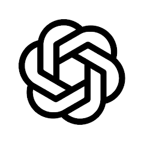

ChatGPT este un asistent conversațional care răspunde la întrebări și poate genera texte, rezumate, explicații, idei, cod și alte tipuri de conținut. Este creat de compania OpenAI și este folosit printr un site sau aplicație.
ChatGPT a fost lansat public la finalul anului 2022. Este construit pe modele de limbaj din familia GPT, antrenate pe cantități foarte mari de text. Ideea principală a fost să existe un mod ușor de a vorbi cu un model AI, ca într o conversație.
Interfața este simplă și conversațională. Poate păstra contextul unei discuții și poate adapta răspunsurile la cerințe. În multe versiuni poate lucra și cu imagini, fișiere sau instrumente, în funcție de setările platformei.
Este folosit pentru învățare și teme, pentru scriere de texte, pentru traduceri, pentru planificare, pentru ajutor la programare și pentru explicații rapide pe subiecte diverse.
Poate greși și poate inventa informații, mai ales când i se cer detalii foarte specifice. Nu trebuie folosit ca singura sursă pentru decizii importante. Este bine să verifici informațiile din surse sigure, mai ales la subiecte medicale, juridice sau financiare.